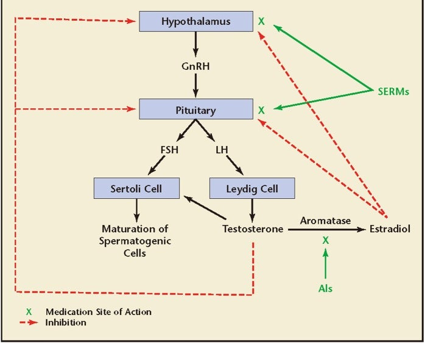

Sources/Excerpts: A Review of Selective Estrogen Receptor Modulators and their Potential for Transfeminine Hormone Therapy
By Lain | First published October 5, 2019 | Last modified June 3, 2021
Preface
This page is a sources and excerpts supplement to the main article which can be found here.
Maximov, Lee, & Jordan (2013)
Maximov, P. Y., Lee, T. M., & Jordan, V. C. (2013). The Discovery and Development of Selective Estrogen Receptor Modulators (SERMs) for Clinical Practice. Current Clinical Pharmacology, 8(2), 135–155. [DOI:10.2174/1574884711308020006]:
However, although these SERMs have many benefits, they also have some potentially serious adverse effects, such as thromboembolic disorders and, in the case of tamoxifen, uterine cancer. These adverse effects represent a major concern given that long-term therapy is required to prevent osteoporosis or prevent and treat breast cancer.
The search for the ‘ideal’ SERM, which would have estrogenic effects on bone and serum lipids, neutral effects on the uterus, and antiestrogenic effects on breast tissue, but none of the adverse effects associated with current therapies, is currently under way.
Note: Serum lipids are like HDL/LDL cholesterol.
There are two ERs referred to as α and β [82-84]. Each receptor protein is encoded on different chromosomes, and have homology as members of the steroid receptor superfamily. There are distinct patterns of distribution and distinct and subtle differences in structure and ligand binding affinity [85]. The ratio of ERα and ERβ at a target site may be an additional dimension for tissue modulation. A high ERα: ERβ ratio correlates well with high levels of cellular proliferation whereas the predominance of functional ERβ over ERα correlates with repression of proliferation [86-89]. Indeed, the ratio of ERs in normal and neoplasic breast tissue could be important for the long-term success of chemoprevention with SERMs.
Kraichely and co-workers [97] demonstrated the important observation that agonists for ERα and ERβ produce subtle quantitative differences with the interaction of members of the SRC family (SRC 1, 2 and 3) and that the coactivator can enhance ligand affinity for the ER.
Evidence has now accumulated to document that the broad spectrum of ligands that bind to the ER can create a broad range of ER complexes that are either fully estrogenic or antiestrogenic at a particular target site [100]. Thus a mechanistic model of estrogen action and antiestrogen action (Fig. 2) has emerged based on the shape of the ligand that programs the complex for future action.
Thus for effective gene transcription, programmed and targeted by the shape and phosphorylation status of the ER and coactivators, a dynamic and cyclic process of remodeling capacity is required for transcriptional assembly [103] that is immediately followed by the routine destruction of transcription complexes by the proteasome. Estrogen and SERM-ER complexes have distinct accumulation patterns in the target cell nucleus [104,105] because they are destroyed at different rates.
Raloxifene lacks estrogenic activity in the uterus and has not demonstrated tamoxifen-like effects in the uterus either histopathologically or ultrasonographically [116], but it has been associated with adverse effects such as VTE and vasomotor symptoms, including hot flushes.
Perhaps the reason for this difference in effect is related to differences on the agents’ effect on inflammation as the agents influence C-reactive protein (CRP) differently. Estrogen and tibolone increase levels of CRP [192], raloxifene and arzoxifene have no effect on CRP levels, and lasofoxifene decreases CRP levels [55]. All decrease LDL levels.
Brzozowski et al. (1997)
Brzozowski, A. M., Pike, A. C., Dauter, Z., Hubbard, R. E., Bonn, T., Engström, O., Ohman, L., Greene, G. L., Gustafsson, J. A., & Carlquist, M. (1997). Molecular basis of agonism and antagonism in the oestrogen receptor. Nature, 389(6652), 753–758. [DOI:10.1038/39645]:
The overall architecture of the ER LBD (helices H3–H12) is similar to that seen in the crystal structures of other nuclear receptor LBDs6–8, and emphasizes the universal nature of this fold within this receptor superfamily9. The LBD is folded into a three-layered antiparallel a-helical sandwich comprising a central core layer of three helices (H5/6, H9 and H10) sandwiched between two additional layers of helices (H1–4 and H7, H8, H11). This helical arrangement creates a ‘wedge-shaped’ molecular scaffold that maintains a sizeable ligandbinding cavity at the narrower end of the domain. The remaining secondary structural elements, a small two-stranded antiparallel β-sheet (S1 and S2) and H12, are located at this ligand-binding portion of the molecule, and flank the main three-layered motif (Fig. 1a).
E2 binds diagonally across the cavity between H11, H3 and H6 and adopts a low-energy conformation. The phenolic hydroxyl of the A-ring (O3; see Fig. 2c for atom numbering) nestles between H3 and H6 and makes direct hydrogen bonds to the carboxylate of Glu 353, the guanidinium group of Arg 394, and a water molecule. The 17-β hydroxyl (O17) of the Dring makes a single hydrogen bond with His 524 in H11. The remainder of the molecule participates in a number of hydrophobic contactsthat are concentrated overthe A, A/B interface and D-rings.
The ER is unique among the steroid receptors in its ability to embrace a wide variety of non-steroidal compounds. Although the ‘pincer-like’ arrangement around the A-ring imposes an absolute requirement on effective ligands to contain an aromatic ring, the remainder of the binding pocket can accept a number of different hydrophobic groups12,13. This overall promiscuity can be attributed to the size of the cavity, which has a probe accessible volume (450 A˚3) nearly twice that of E2’s molecular volume (245 A˚3). The length and breadth of the E2 skeleton is well matched by the receptor, but there are large unoccupied cavities opposite the α face of the B-ring and the β face of the C-ring (Fig. 2a). The positions of these preformed cavities are similar to those predicted from binding studies12.
Note: This may be why things like bisphenol A (BPA) and other random chemicals bind to the estrogen receptor.
Rosano et al. (2011)
Rosano, C., Stec-Martyna, E., Lappano, R., & Maggiolini, M. (2011). Structure-Based Approach for the Discovery of Novel Selective Estrogen Receptor Modulators. Current Medicinal Chemistry, 18(8), 1188–1194. [DOI:10.2174/092986711795029645]:
These two zinc fingers are responsible for the binding of ERα to the estrogen response elements (EREs) located in the promoter regions of target genes. The P-box sequence is identical in the two ER isoforms, suggesting that ERα and ERβ bind EREs with similar specificity and affinity.
Pure anti-estrogen development has also included a further class of molecules represented by the inhibitors of aromatase enzymatic activity, which increases estrogen availability at tissue levels converting androgens into estrogens.
4OHT binds to ERs within the same binding pocket that recognises E2 and produces a nuclear complex which decreases DNA synthesis and inhibits the action of estrogens [24]. Moreover, the complex between ER and 4OHT recruits co-repressor proteins like NCoR and SMRT, which contribute to the antagonist effects of 4OHT [78].
In particular, the position of H12 shifts from the ligand binding pocket to cover a part of the co-activator binding groove, which is formed by residues belonging to H3, H4 and H5 [24]. The receptor recognition of 4OHT is dictated by the phenolic “A ring” and the bulky side chain.
[…] whilst the bulky side chain protruding from the binding cavity displaces H12 and allows a conformation that inhibits the coactivator recruitment.
1ERR - raloxifene / er_alpha pddb. 1ERE [ estradiol / er_alpha pddb.
Next, the long hydrophobic side chain of RAL makes extensive contacts with the hydrophobic residues of the receptor allowing the displacement of H12 similar to 4OHT.
Comparable to other SERMs, Lasofoxifene diverts the receptor from its agonistbound conformation by displacing the C-terminal AF-2 helix 12 into the site at which the LXXLL motif of coactivator proteins would otherwise be able to bind. LAS achieves this effect by occupying the space normally filled by residue Leu540, as well as by modulating the conformation of residues of helix 11.
In addition to these features of SERM recognition, a large alkyl “pendant” side chain, terminating in a pyrollidine head group, threads its way from the ligand-binding pocket out toward the surface of the protein, where it directly interferes with the correct positioning of the AF-2 helix.
Nilsson & Gustafsson (2010)
Nilsson, S., & Gustafsson, J. (2010). Estrogen Receptors: Therapies Targeted to Receptor Subtypes. Clinical Pharmacology & Therapeutics, 89(1), 44–55. [DOI:10.1038/clpt.2010.226]:
Like other members of the nuclear receptor family, the ERs are best known as transcription factors, regulating the transcriptional activity of target genes in cells in response to the natural hormone 17β-estradiol (E2) or to synthetic nonhormonal agonists and antagonists1 (Figure 1). In more recent years, we have also learned that the effects of E2 can have a very rapid onset, within seconds to minutes. These effects may be mediated by membrane-localized ERα and ERβ, respectively (after exposure to ligand stimuli), or by membrane receptors that are genetically and structurally unrelated to ERα and ERβ, for example, GPR30 (G-protein coupled receptor 30).
An increase in the expression of ERβ relative to ERα was shown to inhibit the ERα response to E2, silence the partial ERα-mediated agonism of tamoxifen, and potentiate its antagonism.10 In mice, the level of expression of genes induced by E2 in bone were, on average, 85% higher in the absence of ERβ than in its presence, thereby suggesting that ERβ has an opposing effect on ERα-mediated gene transcription.11
In some organs, ERα and ERβ are expressed at similar levels, sometimes in different cell types within the same organ, whereas in others, one or the other subtype predominates. ERα is predominantly expressed in the uterus, prostate (stroma), ovary (theca cells), testes (Leydig cells), epididymis, bone, breast, liver, kidney, white adipose tissue, and various regions of the brain. ERβ is predominantly expressed in the colon, prostate (epithelium), testis, ovary (granulosa cells), bone marrow, salivary gland, vascular endothelium, lung, bladder, and certain regions of the brain (Figure 3).1,4
In summary, the metabolic findings in knockout mice and in aromatase-deficient or ERα-deficient patients, and the use of ER subtype-selective ligands, suggest a major role for ERα in the maintenance of metabolic control. ERβ may, however, have an opposite effect, especially when unopposed, resulting in a perturbed energy balance and an increased risk for the development of diabetes. Unopposed ERβ activity is a possible explanation for the diabetic phenotype of the male patient with homozygous loss of ERα function. Both ER subtypes are reported to have roles in the prevention of atherosclerotic lesion development, although seemingly through different mechanisms.
SERMs such as tamoxifen and raloxifene and the pure antagonist ICI 182,780, however, antagonize the neuroprotective effects of E2 after experimentally induced ischemia.36
Note: It seems likely to me that in general oral raloxifene would not cause gynoid fat distribution due to its ERα antagonist and ERα-mediated anti-lipolytic pathways in subcutaneous fat – I was wrong.
Studies in the aromatase/αERKO recombinant mouse model confirmed the important role of ERα in the development of the mammary gland. Treatment of ovariectomized rats with the ERβ-selective agonist ERB-041 resulted in no observable effects on rat mammary tissue, suggesting that ERβ-selective agonists are nonmammotrophic.1
In summary, estrogens are of fundamental importance in the development of the mammary gland, and ERα is the primary ER subtype mediating the effects of estrogens. ERβ, however, may play an important role in controlling the mammotrophic effects of ERα and may be an important novel target for endocrine therapy in breast cancer.
In summary, tissues of the urogenital tract are dependent on estrogens for proper growth, development, and functional integrity. ERα is uterotrophic and mediates uterine proliferative responses to E2. It is also the ER subtype that plays the most important role in the feedback on the hypothalamic–pituitary–gonadal axis and the regulation of LH and follicle-stimulating hormone levels. ERβ has an important role in folliculogenesis and ovulation and may have very important therapeutic implications in the diseased prostate, as a drug target in benign prostatic hyperplasia and in both castrate-responsive and castrateresistant prostate cancer.
Greene (2000)
Greene, G. (2000). Comparative Structural Analysis of ERa and ERb Bound to Selective Estrogen Agonists and Antagonists. Chicago: The University of Chicago. [Google Scholar] [URL] [PDF]:
The structures of the LBD complexed with E2 and RAL show that, although both ligands bind at the same site within the core of the LBD (Brzozowski et al. 1997), each of these ligands induces a different conform”ation of helix 12. Whereas helix 12 in the E2-LBD complex packs against helices 3, 5/6, and 11 in a conformation that has been observed for the corresponding helix in other agonist-bound NR LBD structures, helix 12 in the RAL-LBD complex is bound in a hydrophobic groove composed of residues from helices 3 and 5. This alternative orientation of helix 12 partially buries residues in the groove that are necessary for AF-2 activity, suggesting that RAL and possibly other antagonists block AF-2 function by disrupting the topography of the AF-2 surface.
Shiau et al. (1998)
Shiau, A. K., Barstad, D., Loria, P. M., Cheng, L., Kushner, P. J., Agard, D. A., & Greene, G. L. (1998). The Structural Basis of Estrogen Receptor/Coactivator Recognition and the Antagonism of This Interaction by Tamoxifen. Cell, 95(7), 927–937. [DOI:10.1016/s0092-8674(00)81717-1]:
Several proteins, including SRC-1/N-CoA1 (Onate et al., 1995; Kamei et al., 1996), GRIP1/TIF2/N-CoA2 (Hong et al., 1996; Voegel et al., 1996; Torchia et al., 1997;), p/CIP/RAC3/ACTR/AIB1 (Anzick et al., 1997; Chen et al., 1997; Li et al., 1997; Torchia et al., 1997), and CBP/ p300 (Hanstein et al., 1996), associate in a ligand-dependent manner with the ERa. These proteins have been classified as transcriptional coactivators because they enhance ligand-dependent transcriptional activation by the ERa as well as by several other NRs (Horwitz et al., 1996; Glass et al., 1997). SRC-1 and GRIP1 bind to the agonist-bound LBDs of both the human thyroid receptor b (TRb) and human ERa using the putative AF-2 interaction surface (Feng et al., 1998). Members of the p160 family of coactivators, such as SRC-1 and GRIP1, as well as other coactivators, recognize agonist-bound NR LBDs through a short signature sequence motif, LXXLL (where L is leucine and X is any amino acid), known as the NR box (Le Douarin et al., 1996; Heery et al., 1997; Torchia et al., 1997; Ding et al., 1998). Mutagenesis studies indicate that the affinity of coactivators for NR LBDs is determined principally, if not exclusively, by these NR boxes (Le Douarin et al., 1996; Heery et al., 1997; Torchia et al., 1997; Ding et al., 1998).
Rambhatla, Mills, & Rajfer (2016)
Rambhatla, A., Mills, J. N., & Rajfer, J. (2016). The Role of Estrogen Modulators in Male Hypogonadism and Infertility. Reviews in Urology, 18(2), 66–72. [PubMed] [PubMed Central] [DOI:10.3909/riu0711]:

To circumvent the inhibition of LH and FSH from the pituitary by exogenous testosterone, a common strategy used by male reproductive and sexual medicine specialists, in which the goal is to increase testosterone levels while maintaining spermatogenesis, is to use SERMs and/or AIs instead of exogenous testosterone.
Clomiphene citrate works as an estrogen antagonist at the level of the pituitary gland and thus stimulates the release of LH and FSH, which in turn drives both the steroidogenic and spermatogenic functions of the testes.
Other studies have also found that aside from improvement in serum testosterone levels, clomiphene therapy also leads to significant improvement in bone mineral density, as well as androgen deficiency in the aging male (ADAM) scores without any significant adverse events.
Tamoxifen citrate is another oral SERM that was approved in the 1970s for the treatment of breast cancer. It has tissue specific action and acts as an estrogen receptor blocker in breast tissue and exhibits agonistic properties in the bone and uterus.9 Although its use is primarily in women, in men’s health it is used off-label and acts as an estrogen antagonist in the hypothalamus and pituitary gland.23 Because of its mechanism of action, tamoxifen results in the inhibition of the negative feedback of estrogen at the hypothalamus and pituitary gland, and results in the release of LH and FSH, which in turn increases testosterone biosynthesis and “stimulates” spermatogenesis.
Tsourdi and colleagues23 looked at the effects of three SERMs—tamoxifen, toremifine, and raloxifene—on the hypothalamic-pituitary axis in men with oligospermia. They found that after 3 months of treatment with each of these SERMs, there was a statistically significant increase in serum gonadotropins, testosterone, and semen parameters.
Tamoxifen, given its estrogen antagonist properties in the breast, as well as AIs, has also been used in the treatment of gynecomastia. Much of the data stem from boys with pubertal gynecomastia and in men with prostate cancer on antiandrogen therapy; there is evidence that these medications are effective in the treatment of gynecomastia.43-45 Their use in the treatment of gynecomastia induced by exogenous testosterone therapy is largely anecdotal and not evidence based.46 However, the manipulation of estrogen levels in men may not be without consequences. We know that estrogen receptors are present throughout the body and play a role in bone health, body composition, cardiovascular well being, libido and sexual function, and testicular steroidogenesis and spermatogenesis.47-49 Although a high estradiol level may have a negative impact on fertility, a level that is excessively low may not be desirable either.
Kunath et al. (2012)
Kunath, F., Keck, B., Antes, G., Wullich, B., & Meerpohl, J. J. (2012). Tamoxifen for the management of breast events induced by non-steroidal antiandrogens in patients with prostate cancer: a systematic review. BMC Medicine, 10(1), 96. [DOI:10.1186/1741-7015-10-96]:
Our results suggest that tamoxifen has a beneficial effect if compared to no treatment for the prevention of breast events. However, not all patients need prophylaxis to prevent the development of breast events induced by non-steroidal antiandrogen therapy [26,27], and not all patients with gynecomastia require treatment [28]. Therefore, a patient-oriented, pragmatic approach appears reasonable. This approach was also proposed by van Poppel and by Di Lorenzo et al. [14,15,27]. Before starting non-steroidal antiandrogen treatment (either with non-steroidal monotherapy or in combination with LHRH analogues), patients should be informed about the likelihood of breast events and about possible prophylactic therapy options. As recommended earlier by Di Lorenzo et al. [14,15], we also suggest that the physician could wait for the occurrence of breast events in selected patients. Prophylaxis should be started only if the patient is afraid of developing gynecomastia or breast pain.
Jover-Mengual et al. (2017)
Jover-Mengual, T., Castelló-Ruiz, M., Burguete, M. C., Jorques, M., López-Morales, M. A., Aliena-Valero, A., Jurado-Rodríguez, A., Pérez, S., Centeno, J. M., Miranda, F. J., Alborch, E., Torregrosa, G., & Salom, J. B. (2017). Molecular mechanisms mediating the neuroprotective role of the selective estrogen receptor modulator, bazedoxifene, in acute ischemic stroke: A comparative study with 17β-estradiol. The Journal of Steroid Biochemistry and Molecular Biology, 171, 296–304. [DOI:10.1016/j.jsbmb.2017.05.001]:
Note: This shows some variances and similarities in how various estrogen receptor pathways in the brain of mice are with estradiol versus bazedoxifene.
Simpkins et al. [2] provided the first evidence that estrogens (specifically 17β-estradiol, E2) exerted neuroprotective effects in the now widely used rodent model of AIS, namely the middle cerebral artery occlusion (MCAO) model. The authors suggested that estrogens may be a useful therapy to protect neurons against the damaging effects of stroke.
Bazedoxifene acetate (BZA) is the first of the third-generation SERMs approved for the treatment of postmenopausal women at risk for, or presenting with, osteoporosis in Europe and Japan [21]. Due to its favorable preclinical effects, BZA has been selected to combine with conjugated estrogens (CE) resulting in CE/BZA as a new progestin-free hormone therapy option for alleviating estrogen deficiency symptoms in postmenopausal women [22]. As for neural tissue, BZA had been reported to prevent neuronal loss in the hippocampus of rats exposed to excitotoxic kainic acid [23], and to decrease the inflammatory response of astrocytes exposed to lipopolysaccharide [24].
Both BZA and E2 significantly counteracted the ischemia-induced downregulation of ERα mRNA expression in the ipsilateral hemisphere.
As for the effect of the estrogenic compounds, BZA significantly counteracted the ischemia-induced downregulation of ERβ mRNA expression, while E2 was without significant effect.
As for the effect of the estrogenic compounds, neither BZA nor E2 had a significant effect on GPER mRNA expression in the ipsilateral hemisphere.
BZA but not E2 significantly attenuated the ischemia-induced endogenous phosphorylation of ERK1 in the ipsilateral hemisphere (Fig. 6A and B). While p-ERK2 levels were significantly reduced in the ipsilateral hemisphere in animals treated with BZA, there was no significant change in animals treated with E2.
The hypothesis that the neuroprotective mechanism of the SERM, tamoxifen, could be due to its ability to attenuate apoptotic cell death was first suggested and verified by Wakade et al. [11], and subsequently confirmed by Zou et al. [17]. By contrast, the SERM, raloxifene, has been recently reported to have no effect on the hypoxia-induced increase of caspase-3 activity in cultured hippocampal cells [20]. Therefore, our results lend support to the view that, as in the case of E2, SERMs (specifically BZA) are effective anti-apoptotic drugs in stroke.
Wibowo et al. (2016)
Wibowo, E., Pollock, P. A., Hollis, N., & Wassersug, R. J. (2016). Tamoxifen in men: a review of adverse events. Andrology, 4(5), 776–788. [DOI:10.1111/andr.12197]:
Five RCTs have investigated the effect of tamoxifen on men with infertility, and the ages of the participants ranged between 18 and 44 years old (unspecified in two studies). These men (n = 321) were treated daily with 20 or 30 mg tamoxifen for 3–6 months. Three studies reported minimal or no side effects (AinMelk et al., 1987; Maier & Hienert, 1990; Cakan et al., 2009), one study (Kotoulas et al., 1994) reported three men lost their libido, and another study (Maier & Hienert, 1988) reported gastrointestinal events. From these studies, only three men stopped tamoxifen treatment, but the reason was not specified.
Studies in women indicate that genetic variants of cytochrome P450 enzymes may be associated with the presence and severity of tamoxifen AEs. For example, one study on postmenopausal women with ER-positive breast cancer reported that women with CYP2D6 phenotypes, that either are poor or intermediate metabolizer of tamoxifen, have increased risk of developing hot flashes (Regan et al., 2012). In another study, women who are carriers of a variant of CYP3A4 are more likely to experience severe hot flashes (Baxter et al., 2014). However, to date, it remains unclear whether cytochrome P450 enzymes genetic variations can influence the incidences and severity of such AEs in men.
Other AEs also seems to occur more frequently in women than in men including gastrointestinal problems, cardiovascular events, musculoskeletal problems, fatigue, and mood disturbances.
The mechanism(s) to account for the sex difference in tamoxifen AE is/are not understood. However, if this sex difference is real, one possible factor is a difference in activity of cytochrome P450 enzymes that metabolize tamoxifen in the liver (Anderson, 2008; Schmetzer & Florcken, 2012; Spoletini et al., 2012), and thus may influence the bioavailability of more potent tamoxifen metabolites. Furthermore, there may also be sex difference in the distribution of ERs in various organs, as already documented for different brain areas (Kruijver et al., 2003). However, one needs to keep in mind that the low incidence of reported AEs in men on tamoxifen may also be as a result of the fact that these AEs are not thoroughly evaluated in many studies, especially in the non-RCTs. A rigorous assessment of tamoxifen AEs in male populations has yet to be undertaken.
Kuiper et al. (1997)
Kuiper, G. G., Carlsson, B., Grandien, K., Enmark, E., Häggblad, J., Nilsson, S., & Gustafsson, J. (1997). Comparison of the Ligand Binding Specificity and Transcript Tissue Distribution of Estrogen Receptors α and β. Endocrinology, 138(3), 863–870. [DOI:10.1210/endo.138.3.4979]
Note: Only skimmed – looked at relative binding affinities (RBAs) and noted no raloxifene – going to search for other new papers with more info on RBAs.
Rabe et al. (2016)
Rabe, T., Bruyniks, N., Merkle, E., Hadji, P., Kuhl, H., Ahrendt, H. J., Albring, C., Bitzer, J., Egarter, C., Kiesel, L., König, K., Merki Feld, G., Mueck, A. O., Sänger, N., Windler, E. (2016). Selective Estrogen Receptor Modulators–an Update (Joint Statement by the German Society for Gynecological Endocrinology and Reproductive Medicine [DGGEF] and the German Professional Association of Gynecologists [BVF]). Journal für Reproduktionsmedizin und Endokrinologie-Journal of Reproductive Medicine and Endocrinology, 12(4), 287–317. [Google Scholar] [URL] [PDF]:
It is probable that due to the binding of the SERMs to the ER certain co-factors are activated which, either as co-activators or as co-repressors, lead to different gene activations and deactivations in target tissues. Alternative explanations relate to a different affinity to ER and ER or activation of ER and ER, respectively.
Receptor Distribution Both ERs are expressed in various tissue types, but there are some notable differences in their expression pattern [4]: – ERα: endometrium, breast cancer cells, stromal cells of the ovary and hypothalamus [5] – ERβ: kidney, brain, bone, heart, lung, intestinal mucosa, prostate, and endothelial cells [6]
Polymorphism: Various polymorphisms of ERα- and ERβ-gene have been described.
Various ligands differ in their affinity for the alpha and beta isoforms of the estrogen receptor: – 17-estradiol binds equally well to both receptors – Estrone and raloxifene preferentially bind to the receptor alpha (ERα) – Estriol and genistein preferentially bind to the beta receptor (ERβ)
Selective estrogen receptor modulators preferably bind to the α- or β-subtype of the receptor. In addition, the different estrogen receptor combinations can react differently to the different ligands, thus tissue-specific agonist and antagonist effects arise [7]. The ratio of the concentration of α- to β-subtype plays a role in certain diseases.
The concept of selective estrogen receptor modulators is based on the ability to influence the interaction with other ER proteins such as transcriptional co-activators or co-repressors, based on the conformational changes in the ligand-receptor complex which is different between SERMs and estrogen and also different for different SERMs. Since the ratio of co-activators and co-repressors is different in various tissues [9], the same ligand may act as an agonist in one tissue (provided that the co-activators predominate) and as an antagonist in other tissues (where co-repressors dominate).
Note: Also worth pointing out that it’s tamoxifene’s metabolites that are the active ingredients and should probably have been included here.
Tamoxifene induces the recruitment of co-repressors to target gene promoters in mammary cells. In endometrial cells, tamoxifene, in contrast to raloxifene, acts like an estrogen by stimulating the recruitment of co-activators to a subset of genes.
Raloxifene induces the recruitment of co-repressors to target gene promoters in mammary cells [9].
Raloxifene: Non-genomic mechanisms of endothelial nitric oxide synthase activation by the selective estrogen receptor modulator raloxifene have been found by Simoncini et al (2002) [29]. This pathway might be important to understand the different effects of SERMs on the cardiovascular system.
[Tamoxifen:] Transcription of E-responsive genes(s) is attenuated because AF2 is inactive, and co-activator binding is attenuated by the T-ER complex; partial agonist activity results from AF1, which remains active in the T-ER complex.
[New SERM:] Afimoxifene: (4-hydroxytamoxifene) is a selective estrogen receptor modulator which is the active metabolite of tamoxifene [66]. Afimoxifene is a transdermal gel formulation and is being developed by Ascend Therapeutics, Inc. under the trademark TamoGel. Afimoxifene has completed a phase II clinical trial for the treatment of cyclical mastalgia [198].
Gruber et al. (2002)
Gruber, C. J., Tschugguel, W., Schneeberger, C., & Huber, J. C. (2002). Production and actions of estrogens. New England Journal of Medicine, 346(5), 340–352. [DOI:10.1056/NEJMra000471]:
Pickar, Boucher, & Morgenstern (2018)
Pickar, J. H., Boucher, M., & Morgenstern, D. (2018). Tissue selective estrogen complex (TSEC): a review. Menopause, 25(9), 1033–1045. [DOI:10.1097/gme.0000000000001095]:
The combination of estrogens and a SERM is sometimes referred to as a tissue selective estrogen complex (TSEC), although this term is not formally recognized by health authorities.
The question then arose, in the late 1990s, as to whether a combination of SERMs and estrogens might produce estrogen agonist and antagonist effects distinct from that of either component alone and come closer to achieving that goal.54
A key finding from the preclinical “proof of concept” investigation in ovariectomized rats was that BZA could completely counter CE’s stimulatory effects on the endometrium (based on uterine wet weight) when adequately dosed without attenuating CE’s beneficial effects on vasomotor instability, lipids, or bone,54 which supported clinical evaluation of this combination.
In a clinical trial of raloxifene 60 mg/d combined with oral 17β-estradiol 1 mg/d (n = 61) compared with raloxifene alone (n = 62) in postmenopausal women with prior HT use, the TSEC combination significantly (P < 0.001) reduced the frequency of VMS compared with baseline and with raloxifene alone.
It may be possible to create a TSEC combination that uses 17β-estradiol rather than CE in combination with a SERM; however, results cannot be assumed to be comparable to those with CE/BZA without clinical testing. Due to the unique profile of each TSEC, each individual TSEC combination needs to be evaluated separately in clinical studies to identify appropriate doses and assess safety and efficacy.
Liu, Han, & Smith (2013)
Liu, S., Han, S. J., & Smith, C. L. (2013). Cooperative Activation of Gene Expression by Agonists and Antagonists Mediated by Estrogen Receptor Heteroligand Dimer Complexes. Molecular Pharmacology, 83(5), 1066–1077. [DOI:10.1124/mol.112.084228]:
Moreover, antagonist-bound ERs adopt a distinct conformation that enables them to preferentially interact with corepressors rather than coactivators (Huang et al., 2010), thereby reinforcing their negative regulatory properties.
We demonstrate that ER agonist/antagonist combined treatment can cooperatively activate gene expression through an ER-HLD complex consisting of one receptor monomer bound to agonist and another occupied by antagonist. This cooperative activation of gene expression can be enhanced by an SRC-3 coactivator, and requires both ligand-bound subunits to bind to DNA and both AF-1 domains within the ER-HLD for maximal transcriptional activity. Moreover, ER-HLD complexes can activate transcription in the context of a natural promoter, and taken together, these findings demonstrate that ERs bound to different classes of ligands can form dimers that promote gene expression.
Crystal structures of the ERα LBDs bound to either E2 or raloxifene reveal that both ligands bind to the same pocket, and that the overall homodimeric arrangement is the same regardless of whether the LBD is agonist- or antagonist-bound.
Relative to costimulation by agonist/antagonist, the AF-1 domain is important for the partial agonist activity of SERMs such as tamoxifen (McInerney et al., 1996), and SRC-1 can bind to both the AF-1 and AF-2 domains of ERα through the coactivator’s Q-rich region and LXXLL motifs, respectively (Mérot et al., 2004). This raises the possibility that SRC-3 interacts with ER-HLDs through different AF domains on distinct subunits [e.g., AF-2 on agonist-bound ER(GSCKV) and AF-1 on antagonist-bound ER-G521R] to induce maximal transcriptional activity.
Thornton (2007)
Thornton, J. (2007). Effect of estrogens on skin aging and the potential role of SERMs. Clinical Interventions in Aging, 2(3), 283–297. [DOI:10.2147/cia.s798]:
A number of studies have shown that estrogens have many important beneficial and protective roles in skin physiology (reviewed in Thornton 2002, 2005). They have been shown to accelerate cutaneous wound healing (Ashcroft and Ashworth 2003), while a significant number of women notice an improvement in inflammatory skin disorders such as psoriasis during pregnancy (Dunna and Finlay 1989; Boyd et al 1996; Raychaudhuri et al 2003). Estrogens also offer some degree of protection against skin photoaging (Weinstock 1994; Tsukahara et al 2001, 2004) and epidemiological studies indicate that the mortality rates from both non-melanoma skin cancers (Weinstock 1994) and melanoma (Miller and MacNeil 1997) are significantly lower in women.
Many women report a sudden onset of skin aging several months after menopausal symptoms begin. The menopause causes hypoestrogenism, accelerating age-related deterioration, which results in thinner skin, an increase in number and depth of wrinkles, increased skin dryness, and decreased skin firmness and elasticity (Brincat 2000). Hormone replacement therapy (HRT) has been shown to increase epidermal hydration, skin elasticity, skin thickness (Sator et al 2001), and also reduces skin wrinkles (Phillips et al 2001). Furthermore, the content and quality of collagen and the level of vascularization is enhanced (Brincat et al 1987).
More recently, specific antibodies have demonstrated ERβ, but not ERα is expressed by dermal fibroblasts in the papillary dermis of human scalp skin in both sexes (Thornton et al 2003), whereas primary cultures of human dermal fibroblasts from female skin have been shown to express both mRNA and protein for ERα and ERβ (Haczynski et al 2002).
In addition, in female hair follicles the phytoestrogen, genistein inhibits hair shaft elongation to a similar extent as 17β-estradiol. Since genistein preferentially binds to ERβ, this opens the possibility that the inhibition of hair growth in response to 17β-estradiol may be mediated via ERβ rather than ERα (Nelson 2006). Therefore the development of selective estrogen receptor ligands may provide important clinical applications for the prevention and treatment of disorders of hair growth.
A histopathological assessment of rat skin following subcutaneous administration of tamoxifen observed that tamoxifen treatment resulted in the appearance of abnormal hair follicles, epidermal atrophy and increased dermal fibrosis, particularly around the hair follicles (Inaloz et al 2002). There have been reports of tamoxifen treatment causing diffuse thinning of the hair with moderate receding of the frontal hair line (Ayoub et al 1997) and the development of alopecia on the crown, which was reversed when treatment was stopped.
We have recently reported that tamoxifen alone has no effect on human hair shaft elongation in organ culture, suggesting it is not an estrogen agonist (Nelson 2006). However, a 10-fold excess of tamoxifen incubated in combination with 17β-estradiol eliminated the inhibitory effect of 17β-estradiol, suggesting that tamoxifen acts as an antagonist of estrogen in the female scalp hair follicle (Nelson 2006).
Another study has shown that raloxfine has a stronger positive stimulatory effect on collagen biosynthesis than 17β-estradiol (Surazynski et al 2003) and that in contrast to estradiol, raloxifene inhibits the expression of MMP-9.
Mauvais-Jarvis, Clegg, & Hevener (2013)
Mauvais-Jarvis, F., Clegg, D. J., & Hevener, A. L. (2013). The Role of Estrogens in Control of Energy Balance and Glucose Homeostasis. Endocrine Reviews, 34(3), 309–338. [DOI:10.1210/er.2012-1055]:
However, tamoxifen treatment is associated with an increased risk of developing fatty liver (steatosis) (337–339), with approximately 43% of breast cancer patients treated with tamoxifen developing hepatic steatosis (339). The exact mechanism by which this occurs is still unclear.
In the hypothalamus, tamoxifen appears to act as an ER agonist.
In OVX mice, raloxifene reversed OVX-induced increases in food intake, body weight, fat mass, and hyperleptinemia to an extent similar to that of E2. This suggests that in rodents, raloxifene acts as an ER agonist in hypothalamic neurons and fat (346). In postmenopausal women, raloxifene prevents the shift from android to gynoid fat distribution, increases in abdominal adiposity (347), as well as total increases in adiposity (348). The absence of significant effect on body weight in women (349) could be due to the concomitant increase in lean mass and water after raloxifene treatment (350).
Nonetheless, in healthy and diabetic postmenopausal women, short-term raloxifene treatment did not impact fasting glucose, glucose tolerance, or indices of-cell function and sensitivity (351, 352). However, it decreased hepatic insulin extraction and, as a result, increased insulin half-life (352). Additionally, in the Multiple Outcomes of Raloxifene Evaluation trial, 3-year raloxifene treatment of postmenopausal women with or without type 2 diabetes reduced total cholesterol and LDL-cholesterol but had no effect on glycemic control compared to placebo (349). Thus, there is no argument for an effect of raloxifene in improving glucose homeostasis in postmenopausal women with type 2 diabetes. In fact, women with a previous history of hypertriglyceridemia who receive oral estrogen therapy are at risk for clinically relevant progression in this existing risk factor during raloxifene therapy.
In preclinical studies, the TSEC partnering bazedoxifene with CEE seemed to provide these benefits. Thus far, the effect of TSEC partnering bazedoxifene on glucose and energy metabolism is unknown.
Tommaselli et al. (2006)
Tommaselli, G. A., Di Carlo, C., Di Spiezio Sardo, A., Bifulco, G., Cirillo, D., Guida, M., Capasso, R., & Nappi, C. (2006). Serum leptin levels and body composition in postmenopausal women treated with tibolone and raloxifene. Menopause, 13(4), 660–668. [DOI:10.1097/01.gme.0000227335.27996.d8]:
At the end of the study, untreated women showed increased total and percentage of fat mass and increased serum leptin levels compared with baseline values, whereas women treated with HT showed no significant changes. These data seem to indicate that the main determinant of leptin levels in postmenopausal women is body fat content, whereas hypoestrogenism does not seem to influence these levels.
Women in group C showed no significant changes in fat mass, in total and at all areas evaluated, after 1 year of treatment with raloxifene (Fig. 1A-D). No significant changes were observed in lean mass, both total and at all areas evaluated (Fig. 2A-D). The same was observed for the percentage of fat mass (Fig. 3A-D).
We did not detect significant changes in serum leptin levels in subjects in group B and C throughout the study (group B: 16.3 [4.2/39.8] ng/mL vs 17.0 [5.6 /28.7] ng/mL; group C: 15.1 [6.7/26.5] ng/mL vs 17.5 [6.7/29.8] ng/mL).
The present study, although hampered by the limited sample size, seems to confirm that postmenopausal hypoestrogenism leads to increased fat content and suggests that both raloxifene and tibolone may have a role in preventing the changes of body composition induced by postmenopausal hypoestrogenism.
Francucci et al. (2005)
Francucci, C. M., Pantaleo, D., Iori, N., Camilletti, A., Massi, F., & Boscaro, M. (2005). Effects of raloxifene on body fat distribution and lipid profile in healthy post-menopausal women. Journal of Endocrinological Investigation, 28(9), 623–631. [DOI:10.1007/bf03347261]:
For the first time, our results suggest that RLX, most likely because of its estrogen-agonist action, might prevent the shift to a more central fat dis- tribution associated with menopause. In fact, we have found in RLX-users, in relation to controls, no substantial changes in body weight during the 12 months of treatment, a significant lower fat mass in trunk and abdominal region (ROI-L2-4) and a trend towards higher fat depots in legs. At variance, after 1 yr we observed in untreated post-menopausal women a not significant increase of body weight and fat mass in central and trunk region with a decrease in legs. Therefore, RLX could have, similar to the estrogens, different effects on several regional fat tissues. In fact, in pre-menopausal women the gluteo-femoral adipocytes have a low lipolytic activity with tendency towards larger fat cells in the femoral region, while the adipocytes in the central fat depot have a high basal lipolysis with smaller fat cells (32). Besides, the estrogens would seem to enhance the lipoprotein-lipase (LPL) activity, the key enzyme in the regulation of fatty acid deposi- tion, of gluteofemoral fat cells and to decrease the visceral LPL activity (33).
Jacobsen et al. (2010)
Jacobsen, D. E., Samson, M. M., Emmelot-Vonk, M. H., & Verhaar, H. J. (2010). Raloxifene and body composition and muscle strength in postmenopausal women: a randomized, double-blind, placebo-controlled trial. European Journal of Endocrinology, 162(2), 371–376. [DOI:10.1530/eje-09-0619]:
Repeated measurement analysis showed there to be a significant increase in FFM at 3, 6, and 12 months in the raloxifene group (P=0.05) as well as an increase in TBW (P=0.02; Table 2). At 12 months, the mean increase in FFM was 0.83 (2.4) kg in the raloxifene group compared with 0.03 (1.5) kg in the placebo group (P=0.05), and the mean increase in TBW was 0.6 (1.8) litres compared with a decrease of 0.06 (1.1) litres in the placebo group (P=0.02).
In our study, we found an increase in the FFM after supplementation with raloxifene, which could be partly explained by the increase in the TBW content, a known effect of raloxifene supplementation. However, the increase in the TBW content could not explain the whole increase in the FFM, and also the amount of physical activity was comparable between both groups during the study. This means that there is also a real change in body composition with an increase in lean body mass. The results of our study are comparable with some other studies, but in most of these studies there were problems with the design of the study (no blinding, no placebo group, too small groups, and a too short intervention period).
The increase in FFM was not accompanied by an increase in muscle strength and muscle power in our study. Muscle strength is a key factor in maintaining independence in elderly people. There are no other studies concerning raloxifene and muscle strength or power. Studies concerning HRT (estrogen and progestagens) show conflicting results: two randomized controlled trials with no effect (38, 39) and three randomized controlled trials with significant increase in muscle strength (11–13).
Komm & Mirkin (2014)
Komm, B. S., & Mirkin, S. (2014). An overview of current and emerging SERMs. The Journal of Steroid Biochemistry and Molecular Biology, 143, 207–222. [DOI:10.1016/j.jsbmb.2014.03.003]:
Raloxifene binds with high affinity to ERα, with 46% relative binding affinity for human ERα compared with 17β-estradiol, and with a 26% relative binding affinity for rat ERβ compared with 17β-estradiol
Note: A lot more on this article but this was the only relevant thing I really cared about at the time.
Smith & O’Malley (2004)
Smith, C. L., & O’Malley, B. W. (2004). Coregulator Function: A Key to Understanding Tissue Specificity of Selective Receptor Modulators. Endocrine Reviews, 25(1), 45–71. [DOI:10.1210/er.2003-0023]:
For instance, in the absence of endogenous estrogens, tamoxifen frequently exhibits weak estrogenic activity, such as modest stimulation of uterine wet weight and bone density in ovariectomized rats, whereas in the presence of estradiol, it can serve as an antiestrogen, inhibiting responses to a level corresponding to the comparatively modest agonist activity of tamoxifen itself.
However, because neither tamoxifen nor raloxifene possesses significant estrogen-like activity in the CNS, there is clearly a market for other SERMs to fill this niche.
It is also noteworthy that SERMs likely exist in nature. For instance, the estrone metabolite, Δ8,9- dehydroestrone sulfate suppresses hot flushes in postmenopausal women, an estrogenic action. However, it is unable to significantly affect certain other parameters associated with estrogenic responses such as total cholesterol, low-density lipoprotein cholesterol, and high-density lipoprotein cholesterol (23).
[…] raloxifene and 4HT block the ligand-activated AF-2 domain and particularly in the case of 4HT, leave AF-1 able to initiate gene expression.
As a result, 4HT and raloxifene stimulate gene expression in some, but not all, contexts, and these antiestrogens are therefore classified as SERMs.
For ER, 4HT and raloxifene also inhibit its AF-2 domain, and due to the relatively poor AF-1 activity of the receptor, these ligands generally block ER transcriptional activity measured on EREs (61, 78, 79).
It should be noted that 4HT and raloxifene also exert effects on the transcriptional activity of both ER and ER tethered to DNA indirectly through interaction with other transcription factors such as activator protein 1 (AP-1) and Sp1 (80, 81). In this context, the agonist activities of these ligands also is apparent in a cell-specific manner.
For ERE-dependent gene expression, tamoxifen is a partial agonist of ER but is generally unable to stimulate ER transcriptional activity (61, 171, 173). Conversely, when assessing ER activity on AP-1 containing reporter genes, tamoxifen will stimulate ER and ER transcriptional activity.
Carneiro, de Cassia de Maio Dardes, & Haidar (2012)
Carneiro, A. L., de Cassia de Maio Dardes, R., & Haidar, M. A. (2012). Estrogens plus raloxifene on endometrial safety and menopausal symptoms—semisystematic review. Menopause, 19(7), 830–834. [DOI:10.1097/gme.0b013e31824a74ce]:
Most of the studies found a benefit profile with association of RLX and E on women’s quality of life, satisfaction with the treatment, and vaginal dryness. Nevertheless, different qualityof-life scales and visual scales were used to access mainly vasomotor symptoms, which could limit further comparison.
Arevalo et al. (2010)
Arevalo, M. A., Santos-Galindo, M., Lagunas, N., Azcoitia, I., & Garcia-Segura, L. M. (2010). Selective estrogen receptor modulators as brain therapeutic agents. Journal of Molecular Endocrinology, 46(1), R1–R9. [DOI:10.1677/jme-10-0122]:
The neuroprotective actions of tamoxifen and raloxifene, two SERMs that are currently used in clinical practice for the treatment of breast cancer and osteoporosis, have been assessed in different experimental models of neural dysfunction. These include animal models of traumatic injury of the central nervous system and peripheral nerves, stroke, multiple sclerosis, Parkinson’s disease, Alzheimer’s disease, cognitive decline, and mood disorders (Fig. 1). This section is a succinct description of the main findings of these experimental studies, including the limited available information from human studies.
In spite of the neuroprotective actions of tamoxifen in different forms of neural injury, it is unclear whether this molecule may have some benefits for cognition in humans. Indeed, several studies suggest an increased risk of cognitive impairment in women receiving tamoxifen for the treatment of breast cancer, including worse performance in visual memory, word fluency, immediate verbal memory, visuospatial ability, and processing speed tasks (Paganini-Hill & Clark 2000, Shilling et al. 2003, Palmer et al. 2008, Phillips et al. 2010, Schilder et al. 2010). However, other studies have not detected a significant effect of tamoxifen on cognition (Debess et al. 2010).
In contrast to the potential negative effects of tamoxifen on cognition, the results of the multiple outcomes of raloxifene evaluation randomized trial suggest that raloxifene prevents cognitive decline in postmenopausal women (Yaffe et al. 2005). The results of a recent randomized, double-blind, placebo-controlled trial also suggest that raloxifene improves verbal memory in late postmenopausal women ( Jacobsen et al. 2010). In addition, raloxifene treatment enhances brain activation during performance on a face-encoding paradigm and during recognition of familiar items in healthy elderly men.
In agreement with this possibility, we have recently observed that both tamoxifen and raloxifene improve hippocampus-dependent memory in androgen-deprived male rats (N Lagunas, I Calmarza-Font, D Grassi & LM Garcia-Segura, unpublished observations).
Tamoxifen reduces amphetamine-induced manic-like behavioral alterations in rats (Einat et al. 2007) and reduces acute manic episodes in women with bipolar affective disorder (Kulkarni et al. 2006, Zarate et al. 2007). Raloxifene reduces anxiety behavior, assessed in the elevated plus maze test, on ovariectomized rats (Walf & Frye 2010) and decreases anxiety (Strickler et al. 2000, Florio et al. 2001) and depression (Carranza-Lira et al. 2004, Grigoriadis et al. 2005, Sugiyama et al. 2007) in postmenopausal women. Recent clinical studies also suggest the potential application of raloxifene hydrochloride (120 mg/day oral) for the treatment of postmenopausal women with schizophrenia.
Other neuroprotective mechanisms of SERMs are mediated by classical ERs, since they are inhibited by ER antagonists, such as ICI 182 780 (Zhang et al. 2009). The neuroprotective signaling of SERMs may involve the activation of kinases, such as mitogen-activated protein kinase (MAPK), phosphatidylinositol 3-kinase (PI3K), and Akt (Du et al. 2004, Lee et al. 2009a,b), and the phosphorylation of CREB (Sharma et al. 2007) or the inhibition of nuclear factor (NF)-kB-induced transcription (Cerciat et al. 2010). Through these mechanisms, SERMs control synaptic transmission and the expression of molecules involved in the regulation of cell death, oxidative stress, and inflammation.
Raloxifene may also regulate opiate and GABAergic neurotransmission by the modulation of the levels of b-endorphin and neuroactive steroids respectively. Chronic raloxifene administration to postmeInopausal women increases plasma levels of b-endorphin and tetrahydroprogesterone (allopregnanolone), an anxiolytic metabolite of progesterone that modulates GABAA receptors.
These findings suggest that raloxifene may regulate synaptic function by the modulation of local levels of neuroactive substances within the brain.
In general, there is still poor knowledge of the precise molecular targets of SERMs in the nervous system. Although some key molecules have been identified, such as MAPK, PI3K/Akt, CREB, and NF-kB, the molecular mechanisms involved in the neuroprotective actions of SERMs should be investigated with more detail in the different cellular populations of the nervous system.
Lawrence et al. (2004)
Lawrence, S. E., Arnold Faught, K., Vethamuthu, J., & Lawson, M. L. (2004). Beneficial effects of raloxifene and tamoxifen in the treatment of pubertal gynecomastia. The Journal of Pediatrics, 145(1), 71–76. [DOI:10.1016/j.jpeds.2004.03.057]:
Results: Mean (SD) age of treated subjects was 14.6 (1.5) years with gynecomastia duration of 28.3 (16.4) months. Mean reduction in breast nodule diameter was 2.1 cm (95% CI 1.7, 2.7, P < .0001) after treatment with tamoxifen and 2.5 cm (95% CI 1.7, 3.3, P < .0001) with raloxifene. Some improvement was seen in 86% of patients receiving tamoxifen and in 91% receiving raloxifene, but a greater proportion had a significant decrease (>50%) with raloxifene (86%) than tamoxifen (41%). No side effects were seen in any patients.
Surazynski et al. (2003)
Surazynski, A., Jarzabek, K., Haczynski, J., Laudanski, P., Palka, J., & Wolczynski, S. (2003). Differential effects of estradiol and raloxifene on collagen biosynthesis in cultured human skin fibroblasts. International Journal of Molecular Medicine, 12(5), 803–809. [DOI:10.3892/ijmm.12.5.803]:
Raloxifene had stronger positive stimulative effects on collagen biosynthesis, through different biochemical mechanisms, than estradiol in human skin fibroblasts and might reverse some of the postmenopausal changes in skin or connective tissue. Increase of collagen synthesis induced by raloxifene may be activated by both estrogen receptor dependent and independent pathways such as up-regulation of estrogen receptors, up-regulation of IGF receptor, transcriptional regulation of collagen genes by estrogen receptor-raloxifene complex, increasing of prolidase activity or finally by inhibition of MMP-9 expression.